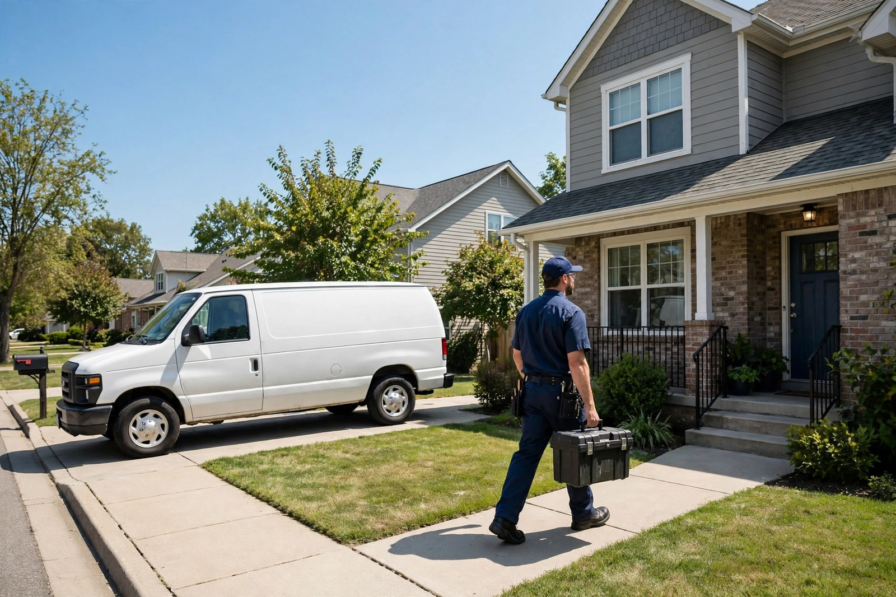
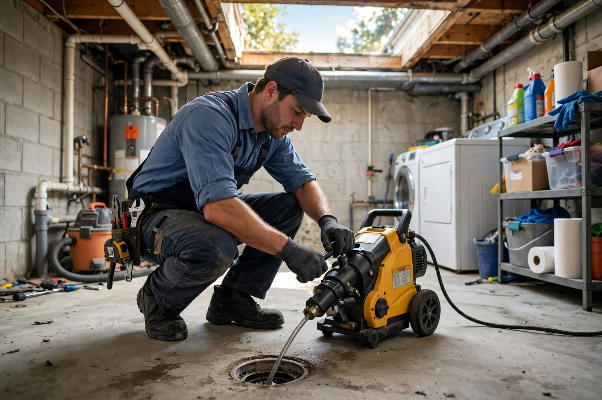
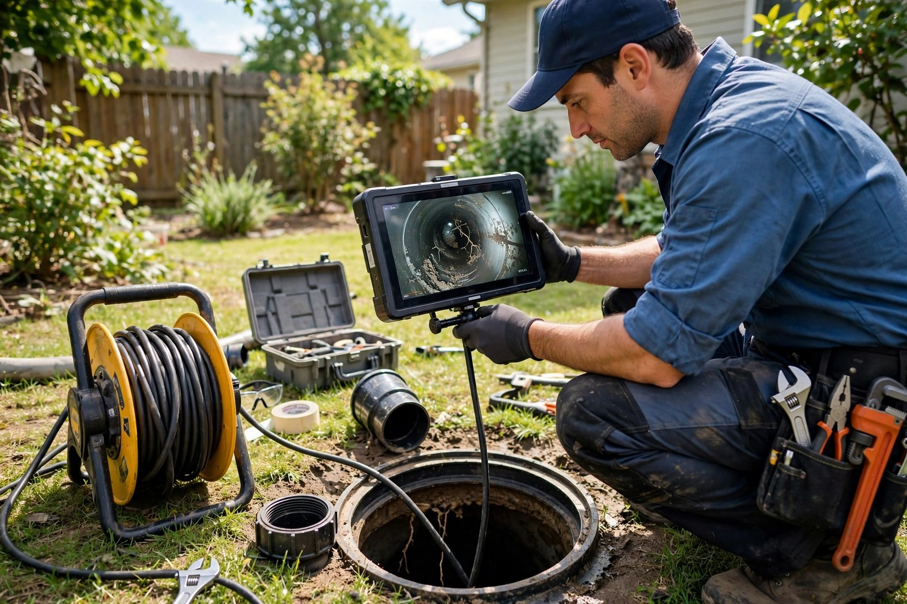
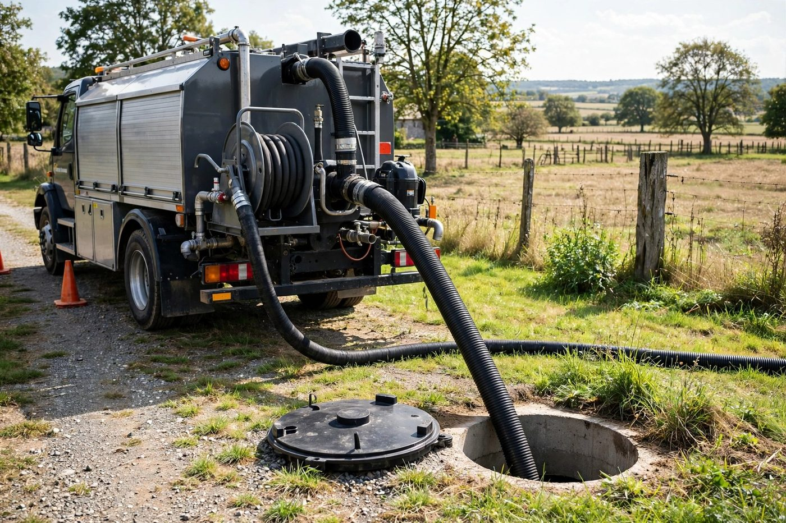

Drain cleaning
Professional rooter service to clear stubborn clogs — fast, clean and thorough.

Des Moines, Iowa · Drain & sewer specialists · Open daily 8 AM–10 PM
Rated 4.8 out of 5 from 142 reviews: drain cleaning, sewer line work, root removal and septic pumping — done right the first time.
What we do
Professional rooter service to clear stubborn clogs — fast, clean and thorough.
Sewer line work that gets your system flowing again with minimal disruption.
Tree roots choking your pipes? We cut them out and restore full flow.
Camera inspections show exactly what's wrong inside your pipes — no guessing.
Septic tank pumping to keep your system healthy and avoid costly backups.
Grease trap cleaning for restaurants and food businesses — stay compliant.

Why choose us
Clogs and sewer problems can't wait. We show up fast, diagnose honestly and leave your place clean — that's why Des Moines keeps calling us back.
On the job


Word on the street
Good to know
Call us at (515) 262-6520 and we'll get to you as quickly as possible — we're open 7 days a week.
Yes — our video camera inspections locate roots and blockages exactly, then we cut the roots out.
Yes, septic pumping is one of our specialties — regular pumping keeps your system trouble-free.
It depends on the job — call us for a fair, upfront quote before any work begins.
Come see us